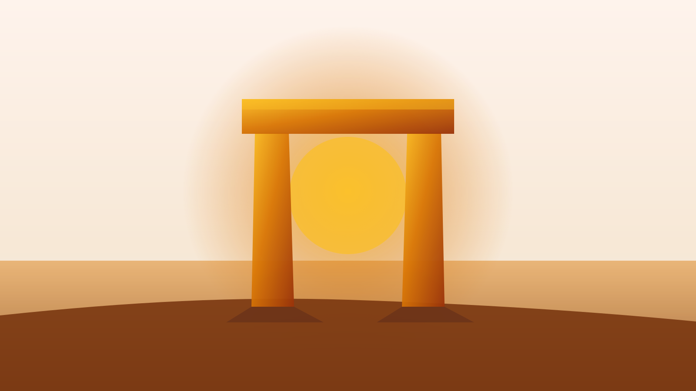
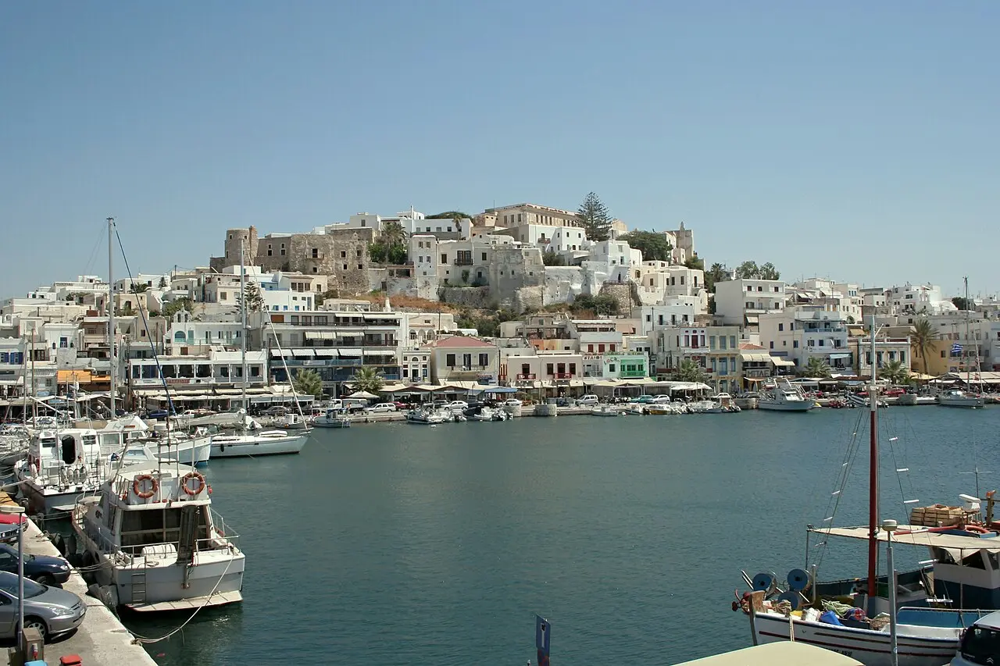
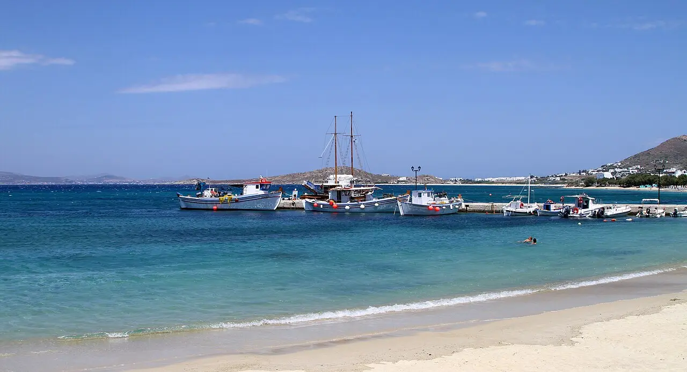
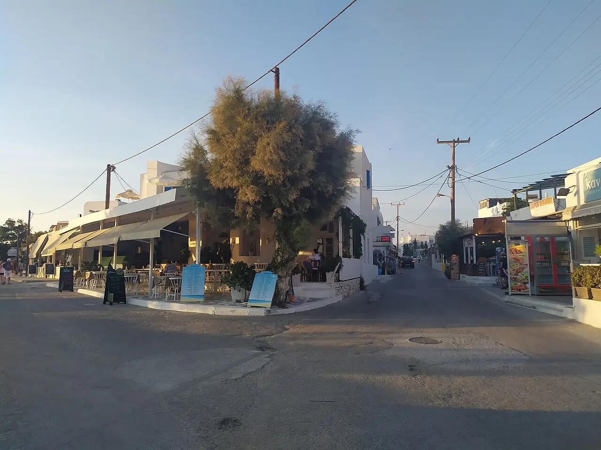
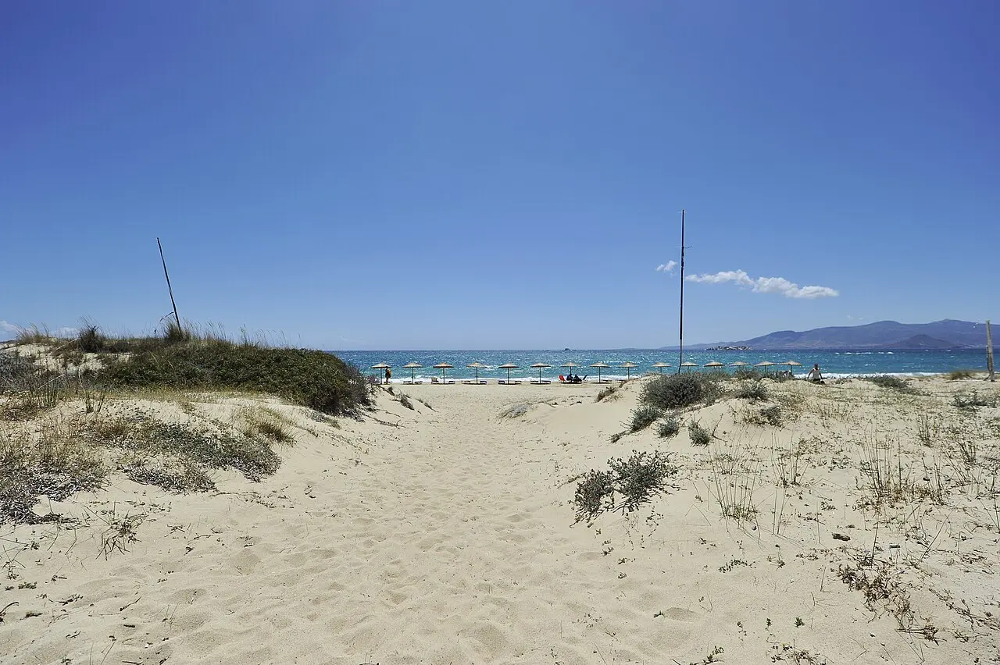
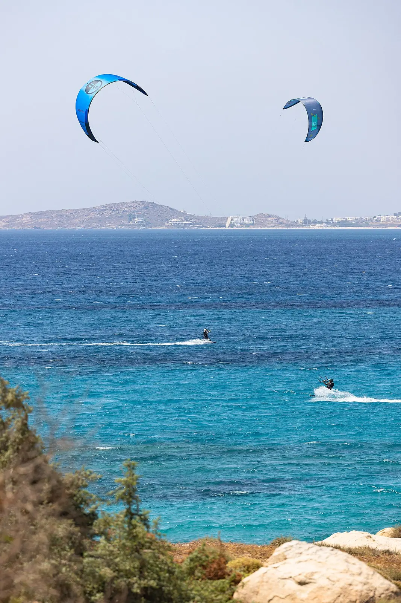
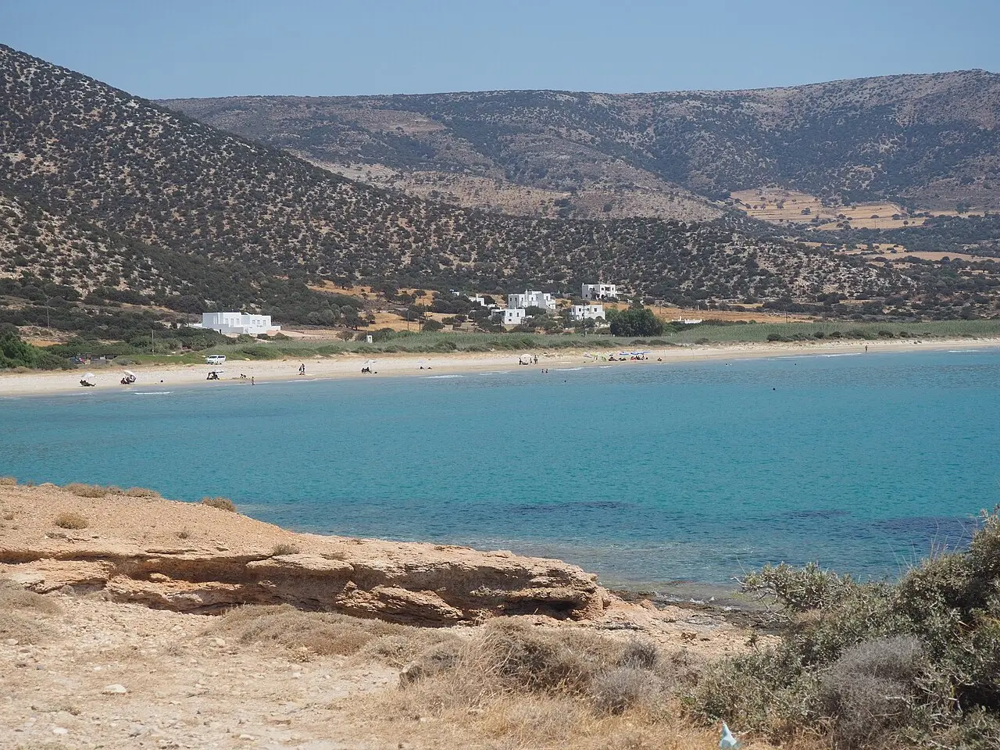
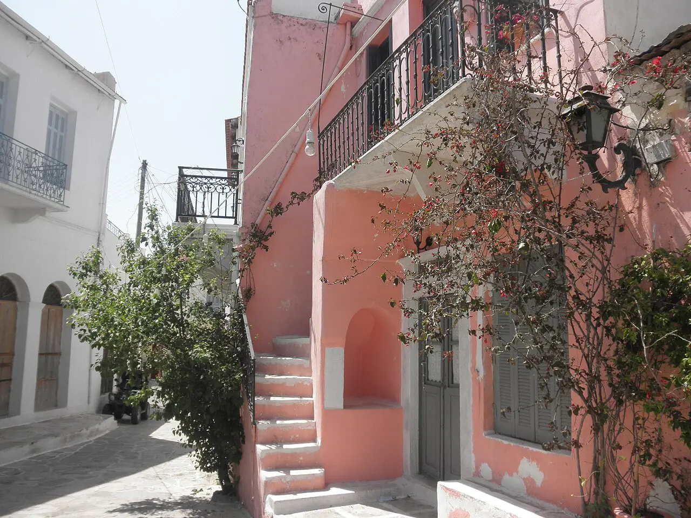
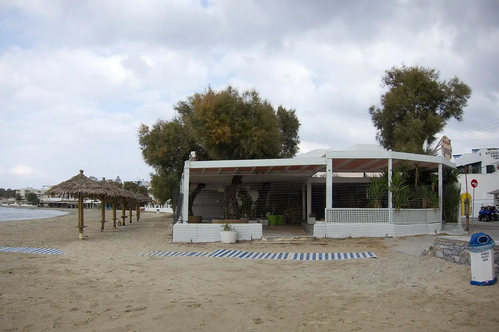

Naxos · 3–4 nights · first visit · 2026
The board says
Chora Port in town, all 14 bus routes, the island's best dinner and a beach — all on foot. It also happens to be the cheapest area on Naxos [2].

Winner · 26 / 30
Chora (Naxos Town)Ferry port is in town [1], Agios Georgios beach ~5 min on foot [2].
Unless · pure swim-and-sleep
Ag. Prokopios / Agia AnnaSand at the door, 15–17 min and €1.80 back to town [3].
Unless · best sand, and you drive
PlakaQuiet going south, but the bus timetable dictates a car-free day [2].
The board
Seven candidate bases, eight axes. Filled marks always mean better for a car-free 3–4 night first visit — so quiet counts as a virtue and a cheap bed counts as a win. Every mark is a rendering of the cited fact printed beneath it; where the ledger has no number, the cell says so rather than guessing.
| Axis / base |
 Chora1st · Naxos Town |
 Agia Anna2nd · beach strip |
 Ag. Prokopios3rd · beach strip |
 Plaka4th · beach strip |
 Mikri Vigla5th · south-west |
 Pyrgaki6th · far south |
 Halki / Filoti7th · mountains |
|---|---|---|---|---|---|---|---|
| Walk to the portFull = in town | In town [1] | No [1] | 5.6 km to port [8] | No [1] | No [1] | ~45 min drive [1] | 30–45 min drive [1] |
| Walk to a beachFull = on the sand | ~5 min to Agios Georgios [2] | 10 m to the public beach [9] | 150 m / ~3 min [8] | On the sand [10] | On the sand [11] | On the sand, shallow [1][13] | None — beach is a day trip [1] |
| Walk to dinner + a barFull = best on the island | Best on the island — harbour south end + old-town alleys [15] | Beach tavernas + one late beach club [1] | Beach restaurants; thin late without transport [1] | North end only; south stretch empty [1] | Few independent restaurants [1] | Limited tavernas [1] | Village tavernas, limited [1] |
| Bus link to ChoraFull = it is the hub | All 14 routes radiate from here; 91 stops [16] | 17 min · €1.80 [3] | 15 min · €1.80, ~every 30 min in summer [3][4] | 25 min · €2.00 [3] | 35 min · €2.60 [3] | "Little or no bus service" [4] | 30–35 min · €2.30–2.60, only a handful a day [3][4] |
| Car-free viableFull = no car at all | Yes [1] | Yes [2] | Yes [2] | Only just — "the bus timetable will dictate your day" [2] | Car essential [1] | Car required [1] | Car essential [1] |
| Quiet at nightFull = very quiet | Waterfront busy, old town quieter [1] | Calmer, village-ish [2] | Moderate, resort-like [1] | Low, quieter going south [1] | Quiet [1] | Very quiet [1] | Very quiet [1] |
| Nightly rateFull = cheapest · not scored | Cheapest area on the island [2] | Cheapest of the beach strip [2] | €60–120 shoulder, "climbing considerably" in Aug [2] | €80–150 shoulder [2] | — No rate in the ledger | — No rate in the ledger | From ~$338 at the top end [14] |
| Who it fitsNot scored | Couples + first-timers [1] | Families [2] | Families + couples [1] | Couples, slow travel [2] | Wind-sports, active [1] | Calm-water families [1] | Repeat visitors [1] |
| Driving tax over 3–4 daysNot scored | Zero baseline — everything radiates out | +4.7 km each way to Chora [8] | +4.7 km each way to Chora [8] | Every dinner out is a drive | All meals + all sights | ~45 min to town, both ways [1] | 30–45 min to any beach, both ways, daily [1] |
| Board total6 scored axes · max 30 | 26/30 | 21/30 | 19/30 | 16/30 | 13/30 | 11/30 | 8/30 |
Why Chora takes it
One base, zero transfers, everything on foot
The ferry drops you in the middle of it [1], so night one costs you no transfer. Every KTEL line starts here — 14 routes, 91 stops, summer 2026 schedules already published [16] — so the beach strip, the Tragaea and Apeiranthos are all day-trips from your own door.
Dinner is the tiebreak. The island's restaurants and bars concentrate at the south end of the harbour and through the old-town alleys [15]. On the beach strip the same evening needs transport [1].
And it is the cheapest area on the island [2]. The only axis Chora loses is quiet: the waterfront is busy, the old town less so [1].

One verified property per base
Each of these is in the citation ledger with its own official site — not a booking aggregator. Nothing here is a rate quote; the ledger only carries what each hotel says about where it stands.
Split the stay?
Over 3–4 nights the payoff is small: the whole beach strip is 15–25 minutes and €1.80–2.00 from Chora [3], on a bus that runs roughly every 30 minutes in summer [4].
Base once in Chora and day-trip. Split only at 5+ nights — and then Chora → Plaka, not Chora → mountains.
The board's sources
16 sources. Every mark above traces to one of these.
Per-area breakdown: ferry access, beach, dining, noise, car requirement, who each suits.
Chora is cheapest and the bus hub; shoulder-season price bands; Plaka is timetable-bound without a car.
2026 fares and journey times from Chora to the beach strip and the villages.
Beach lines ~every 30 min in summer; village lines a handful a day; far south little or none.
Island-wide anchor: average $157/night, high season ~$292, median $111.
150 m from Agios Prokopios beach; 4.7 km to town, 5.6 km to the port.
Indicative 2026 rate for the top mountain-village property: from $338.
Restaurants and bars concentrate at the harbour's south end and the old-town alleys.
14 routes, 91 stops, summer 2026 schedules live, all radiating from Naxos Town.
The rest of the trip
Getting there, and whether you need a car
Fast ferry from Piraeus, rent a car for 2 of your 3–4 days, bus the beach days.
SurveyChora on foot: Kastro, the Portara and the town core
One long day on foot — Old Market early, Kastro mid-morning, Portara at sunset.
SurveyNaxos beaches, coast by coast
The west-coast strip carries the trip; the east coast and remote south are day-eaters.
ExpeditionThe Naxos interior: villages, marble country and Mt Zas
Two driving loops and one dawn climb cover the whole interior.
SurveyEating and drinking Naxian
Two PDO cheeses, a PGI potato, a PGI citron liqueur — and the eating is inland.
ReconDay trips off Naxos: which one earns a day of four
No off-island ferry beats Naxos itself on a 3–4 day first visit.